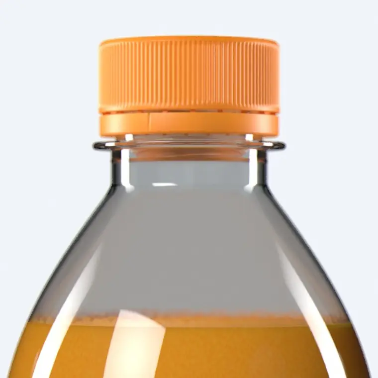

Del cierre al nivel de llenado
Comprueba que el tapón está presente, íntegro y bien colocado, controla el precinto y el nivel, y lee el marcaje del envase. En vidrio y PET, desde 0,33 L hasta garrafas de varios litros.

Defectos del tapón

Tapón inclinado

Integridad del precinto

Tapón solidario

Nivel de llenado

Presencia y lectura del lote

Presencia y orientación del asa